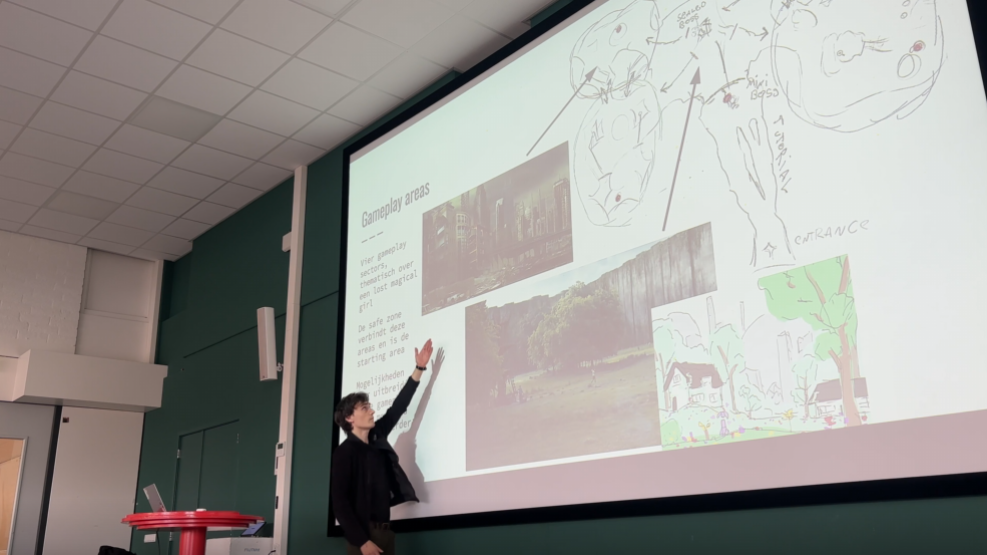
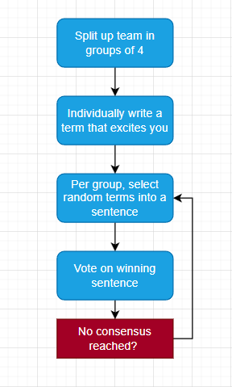
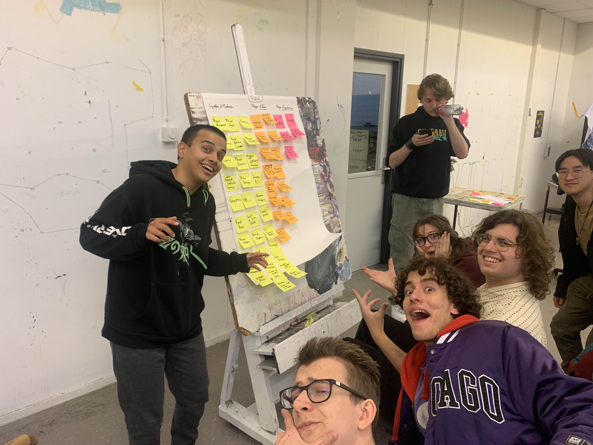
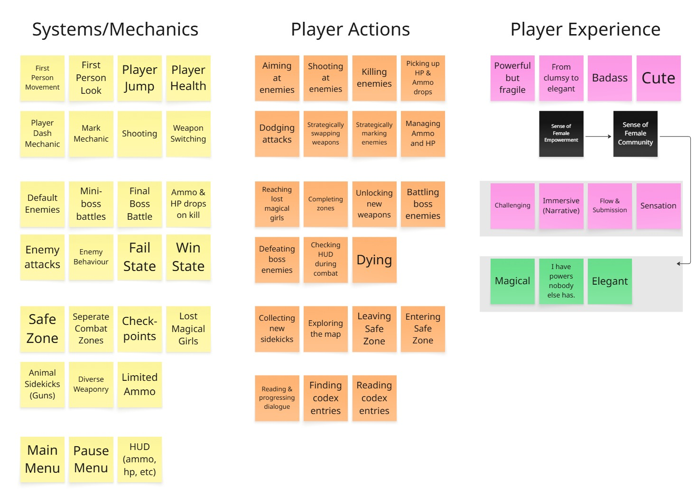
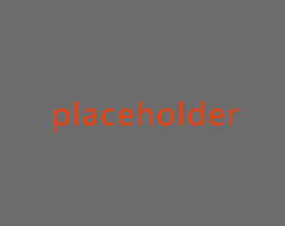
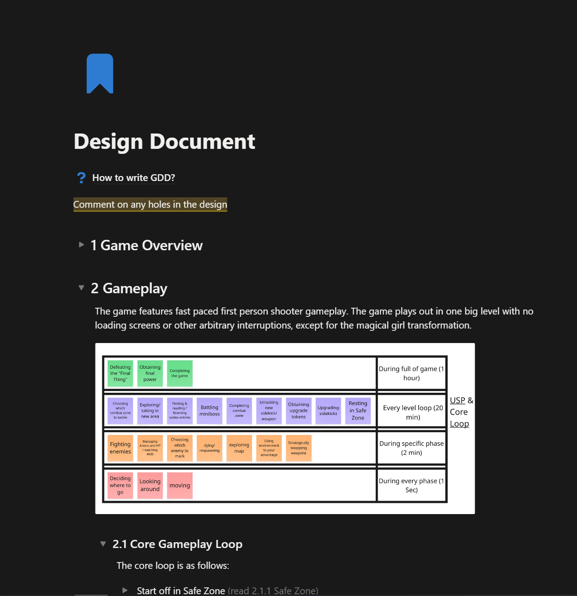
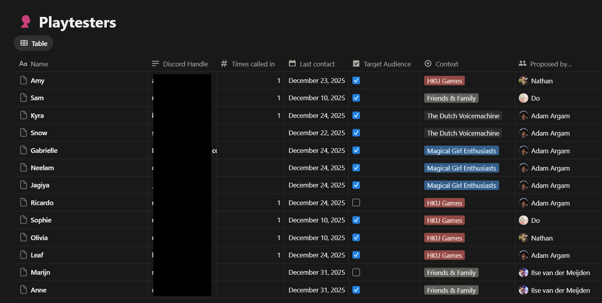
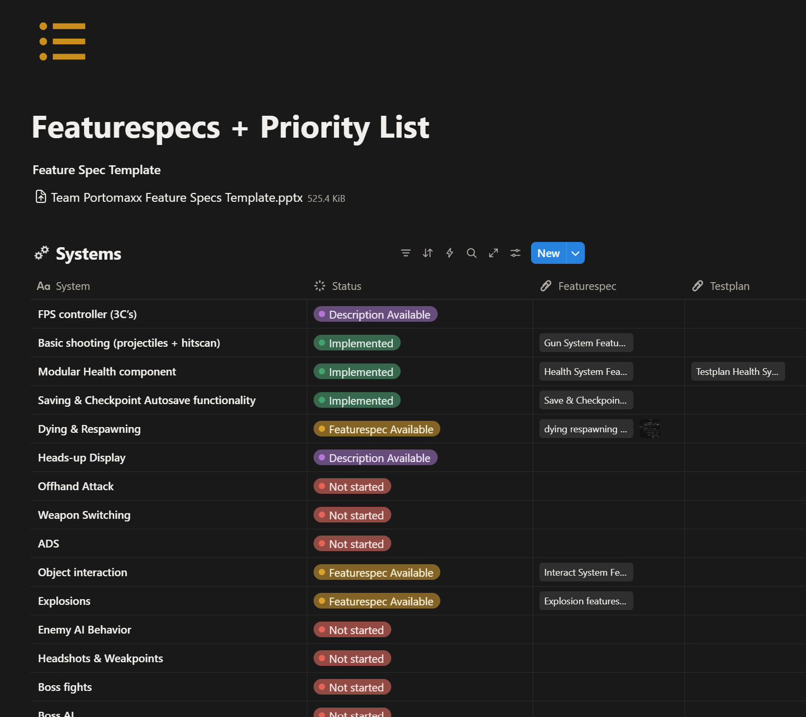
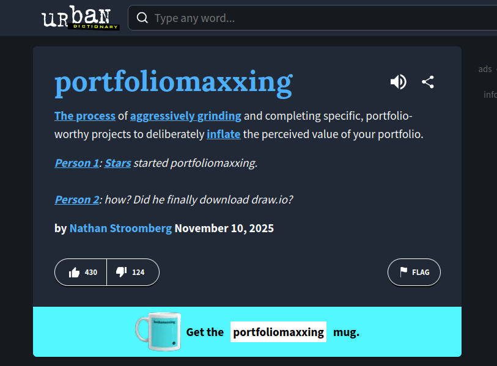

Team Portomaxx
Completion date:
January 30, 2025
Development time:
3 months full time as Lead Designer
Project type:
Self initiated study project, team (19 students)
January 30, 2025
Development time:
3 months full time as Lead Designer
Project type:
Self initiated study project, team (19 students)
Description
We offered what is essentially a form of alternative education to a total of 19 students (more than 1/5 of our year’s total students!) to work on a magical girl themed FPS called Sparkleblast, practicing industry standard tools and workflows. Our primary goal was to simulate a professional work environment and develop industry-standard skills, shipping a complete product was secondary.Why Portomaxx?
I wanted to measurably improve my game design process, not just make games, but be able to show the thinking behind them. Portfolio reviews made it clear that positive feedback and high grades weren't enough, I needed to improve and document my design workflows and team experience.I jokingly called this "portfoliomaxxing", a term that resonated with many fellow students. I established a core team of dedicated leads, who I facilitated the perfect portfoliomaxxing environment with, which I called team Portomaxx.

As a student-led initiative, the project received little to no institutional support. We had to figure out the team structure and workflows practically on our own, on a scale we had never experienced before, making it one of the most stressful and at the same time educational experiences of my study.
Concept & Core Player Experience
Reaching Consensus
Group ownership of the game concept was essential, but no individual concept resonated with the team. This turned into a big motivation drain. To prevent delays, I developed "Concept Squads", a method where members split in groups and write down elements they want in a game, randomly combine them into sentences, and iterate until something clicks.In two hours we had full consensus: a magical girl themed FPS, born from the winning sentence "In a desolate world, find hope by using cute animal sidekicks that transform into guns and feeling badass, with magical girls."



Core Player Experience
As the lead designer, instead of diving straight into the engine, I chose to first work with the designers to fill out a customized version of the (somewhat archaic) MDA model. By starting with the Player Experience, I could more deliberately design Player Actions and Systems that contribute to the desired player experience, later updated by thorough target audience research.Player Character (3C's)
Game Plan
Together with the producer I decided we would create and test three diverse Player Character prototypes, culminating in one ideal merger based on results of playtesting. Delays on this front would halt other areas of the project, and as one of the more proficient UE users, I decided to create two out of three prototypes myself.Playtesting would be performed in test levels that showed each prototype's strengths, and a gym level would be made for the final merger to aid the level design process.
Prototype 1
A safe, generic FPS player character with a longer "hold" double jump, focused on verticality. (I thought if the other options failed, we would have a safe and tested option we can fall back to.)- Inspired by Juno from Overwatch, often mentioned in our target audience research.
- Player can scale heights quickly, which fits the magical girl experience well.
Prototype 2
An experimental, elegant inline skating player character with momentum and sliding movement.-
Movement speed tied to camera bobbing curve.
Sells skating very well, reduces apparent motion sickness from camera sway. -
Player moves elegantly and fluidly.
(Playtest whether players feel this fits a magical girl.)
Playtest
I devised a testing plan, outlining the subject, hypothesis, setup, and test questions, helping me properly prepare and document the test.6 players tested each prototype in a screen share Discord call, answering the prepared questions. I paid close attention to their playstyle and enjoyment trying the prototypes.
Testers thought the skating movement matched the magical girl theme the best, it was elegant and, with some improvements, could be part of game they would enjoy. Wallrunning (from the third prototype made by a team member) was also a favourite. I decided to mix these two elements.
The entire test can be read on this page (in Dutch).

Final Merger
I incorporated the playtest feedback into the ultimate player character for Sparkleblast: Skating movement, wallrunning, easier braking and control, more air time, less head bob when jumping.In the end, wallrunning took too many development resources better spent elsewhere. Together with the development lead, I had to make the tough decision to cut it entirely, disappointing the team. With a fixed deadline and limited resources, it was still the right call.
Design Pipelines & Documentation
Design Decision Template
Sometimes miscommunications arose about certain decisions, leading to disagreements long after the decision had been made.To prevent this, I created the "Difficult Design Decision template", where a full decision making process can be followed and documented for future readers, including topics like personal biases, research, team input, and consequences.
An example of a filled out template, outlining the game's ending, can be read here.

Design Document
As the lead designer, I was the main author of the design document, a great exercise in making the entire design as concrete as possible.In practice however, no one likes reading, and it became apparent that the design document was outdated practically the moment I wrote it. I tried incorporating as many visualisations as possible. The entire document is accessible online through this link.
Because of this, I delved into one-page design documentation, which I feel works much better to convey design to the team, a technique I used in later projects.
Feature Specs
To effectively communicate complex features and design intent with developers, we opted for feature specs as our medium for communication, outlining user interaction, design intent, and technical implementation.Any feature that wasn't simply a prototype and had to be properly incorporated into the game's systems got a feature spec.
I wrote many feature specs throughout the project, iterating on each one based on developer feedback.

Project Management
Team Structure
As lead designer, I was the central point of contact between departments, which consisted of 3 developers, 6 designers, 7 artists (+2 "freelancers"), each with their dedicated lead. Our level designer doubled as producer.Leading the design team was challenging. Designers are opinionated by nature, and discussions could spiral over the smallest of decisions. Addressing this directly with the team improved things significantly. I learned that open communication often works better than quietly managing around a problem.
I delegated confidently to the development and art leads, both being the most proficient team members in their respective field, and capable of identifying and communicating problems early.
Strike Teams
To encourage cross-disciplinary work, I appointed strike teams, small groups of 2-5 team members focused on a specific topics like weapons, enemies, and levels, based on each team member's skills and learning goals.I checked in with each strike team every standup, assisting where needed, such as giving the weapons team a variety matrix to structure their work.
Scrum
We worked in two-week sprints, deliberately skipping velocities and other in-depth analysis to avoid unnecessary overhead.I led daily standups and, together with 3 other leads, planned over 1200 hours of work per sprint. The scrumboard allowed members of the team to self-organize and took significant pressure off my shoulders.
Notion
Notion Databases proved valuable for organizing our work, allowing us to keep knowledge and data accessible to the entire team.

Post Mortem
By now I have worked with all these new techniques so much that it feels like I've always known them. That is what made this team project so incredibly valuable to me, as a leader I had to be able to justify everything I do, and therefore also master all these processes properly. I now apply them instinctively to new projects, which has given me a much stronger foothold during my creative process, which was exactly what I set out to achieve with Portomaxx.
Sparkleblast did not reach a shippable state by the end of the project. Managing consistent output across 19 students in >3 month timeframe proved an enormous challenge, one I underestimated going in, and one that taught me as much about production management as anything else on the project. Together with a small portion of the team, I'm planning to polish and release a demo on itch.io, as a showcase of what we have achieved.
Ironically, all this 'overhead' of production and leadership tasks meant I was able to portfoliomaxx less than I had originally hoped. But this was without a doubt the most educational project I have ever been part of, making it more than worth it. Saying I learned a lot would be an understatement. I feel I have undergone an enormous period of personal growth, both in terms of game production and on a social level. Perhaps it's not so surprising that I transformed so much, given that our game is about magical girls!
Sparkleblast did not reach a shippable state by the end of the project. Managing consistent output across 19 students in >3 month timeframe proved an enormous challenge, one I underestimated going in, and one that taught me as much about production management as anything else on the project. Together with a small portion of the team, I'm planning to polish and release a demo on itch.io, as a showcase of what we have achieved.
Ironically, all this 'overhead' of production and leadership tasks meant I was able to portfoliomaxx less than I had originally hoped. But this was without a doubt the most educational project I have ever been part of, making it more than worth it. Saying I learned a lot would be an understatement. I feel I have undergone an enormous period of personal growth, both in terms of game production and on a social level. Perhaps it's not so surprising that I transformed so much, given that our game is about magical girls!
